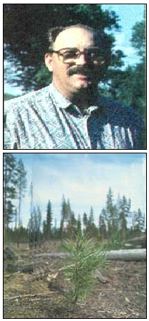
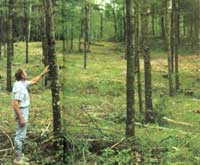
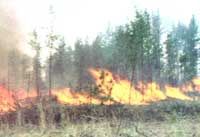

There's much you can do to add diversity and productivity to even the most modest of stands
Many people hesitate to do anything to their woods, either due to a lack of time or knowledge, or because they fear tampering with a delicate ecosystem and its wildlife. Many make the assumption that all human intervention in the environment is detrimental. It isn't. Careless clear-cutting and other drastic methods notwithstanding, there's much you can do to add both vigor and productivity to your woodland. But any kind of woodland management is a trade-off. Anything you do to your woods, even leaving it alone, will be beneficial to some wildlife and detrimental to others. As a steward of your woodland, you have to decide which plants and animals you wish to favor and manage for them.
Thoughtfully planned, proper management of your woodland can improve aesthetics, increase income, and improve both game and nongame wildlife potential.
Let's start with the basics. To efficiently manage our woodlots, we must understand the methods used by nature throughout the ages to shape them.
Forests usually begin as brush and sun-loving tree seedlings that take over grasslands or recently disturbed sights. As these first seedling trees grow and mature, they shade the ground and effectively shade out sun-loving plants below them, including their own seedlings. Shade tolerant species will then grow up through these and gradually take over. Since these tree species can reproduce in shade, they can continue to grow until the next catastrophic disturbance allows sunlight to reach the forest floor, causing the process to start again.
This progression of dominant tree species is known as succession. Six stages of succession are noted:
1. Grass and forbs (forbs are broad-leaved nonwoody plants)
2. Herb, shrub, and seedling stage.
3. Young forest.
4. Mature forest.
5. Subclimax old-growth forest.
6. Climax old-growth forest.
Each stage in succession is characterized by certain distinct groups of tree species. Pioneer species such as bur oak, quaking aspen, certain pines, and white birch are usually the first trees to become established after a catastrophic disturbance such as wind storm, fire, insect damage, disease, or clear-cut logging. The are shade intolerant and cannot reproduce even in their own shade.
Gap phase species such as red oak, red maple, yellow birch, basswood, white spruce, and white pine are more shade tolerant than the pioneer species but only grow when a gap appears in the forest canopy, such as when a tree dies or is otherwise removed. These may become the dominant tree species in subclimax old growth forests, and may persist on into the climax forests.
Climax species like white cedar, white spruce, sugar maple, and balsam fir are quite shade tolerant and only reproduce under the forest canopy. If a catastrophic disturbance removes the forest canopy, the forest will then quickly revert to an earlier stage.
Some trees, such as the ponderosa pine, will reproduce well in either sun or shade. Succession in these forests will look more like this:
1. Grass and forbs.
2. Shrub and seedlings.
3. Sapling-pole stage.
4. Young forest.
5. Mature forest.
6. Old growth.
The dominant species is the same through the entire succession, but wildlife will vary according to the amount and composition of shorter brush and trees.
Each stage in the forest succession is favorable to a certain group of wildlife. Your management can halt, slow down, speed up, or reverse this natural succession, or you can allow it to proceed naturally. Whatever you do will affect the wildlife present. Before the settlers arrived with their need for lumber and cleared areas for agriculture, natural catastrophes such as windstorms, insect plagues, and wildfires-either from natural causes or lit by Native Americans-produced clear-cut areas in the forests, reversing succession for a time. The frequency of these fires would, of course, vary widely in different parts of he country, but in some areas they were quite frequent.
Protection from natural disasters only benefits certain trees. For instance, recent research has found that the giant sequoia in California's Sierra Nevada Mountains is dependent upon fire for reproduction. The larger trees are very fire resistant and the seeds need a mineral soil to germinate and grow. When a fire burns off the accumulated duff (decaying leaves, twigs, etc.) on the forest floor, then the seeds can germinate and grow. With the fire suppression in the protected groves where these huge trees grow, giant sequoia reproduction has been nil. Controlled burning is now being tried in an effort to enhance sequoia reproduction.
Without these natural disasters, natures harvests if you will, America's forests would long ago have all been converted to old-growth climax forests, to the total exclusion of subclimax species with their associated flora and fauna.
So...how do you start? The first step in woodlot management is formulating a management plan. It should be written and reviewed every few years. There are three steps to developing a woodland plan. They probably should be approached simultaneously, but for clarity we will approach them separately.
The first step is goal setting. What do you want from your woodlands? Hiking? Hunting? Bird watching? Mushroom hunting? Do you want a steady supply of firewood? How about lumber for your own use? Is income from a timber sale attractive to you?
Selective cutting may be visually pleasing, but it is not the most convenient way to harvest.
After you know what you want to get out of your woodlot, find out what is already there. What trees, shrubs, plants, and animals are present? How big is your woodland? What soils types, moisture, and topography do you have? These things will all affect future possibilities.
The third step in the process is to gather information. There are many nature guides to help you identify the plants and animals present. Naturalists at your closest state or national park, or teachers at your local high school or college may be able to help you with identifications.
One source of information that I found to be very valuable was the state-run Stewardship Incentive Program (SIP), or Woodland Stewardship Plan. They have extensive information available for each state. This is important because our country sustains many different climates, each with its own set of flora and fauna, possibilities, and problems. I found out about the program by accident when the local SIP man stopped by looking for my neighbor so that he could draw up a Woodland Stewardship Plan for him. The sidebar starting on page 73 lists the agencies in each state that administer the program. They can supply you with a great deal of information that will help you draw up your plan, and, if you are comfortable accepting government funds, cost sharing may be available to cover up to 75% of the cost of implementing certain parts of your plan.
Other excellent sources of information are the State University Agriculture Extension Office in your county and any forestry associations in your area. See the sidebar bellow for a listing of national forestry related associations and periodicals.
Most sources recommend that you obtain the services of a professional forester. However, I would strongly urge you to study enough to become your own forester. Read extensively on the subject and you can learn the same things that a professional forester knows at a considerable savings.
Once you know what you have, where you want to go, and have gathered information on recommended ways to get there, it's time to write up your plan. This plan may be simple if you have a small homogenous acreage, or quite complex if your acreage is large with differing soil types and moisture situations.
Your management plan should at least address the what, when, and how of timber harvesting. The details will depend on where you live, what trees you have growing on your property, and the goals you have for your woodlot.
Most loggers are capable, honest, and efficient. However, the behavior of some has spoiled the reputation of all loggers. Some will leave a mess while only taking the best trees. Even worse, some compound the problem by not paying for the trees they cut. If you deal with a logger, here are a few common sense rules to follow:
1. Obtain bids and references from several loggers and check them carefully.
2. Get advice from a disinterested third party, such as your forester.
3. Get a written contract covering at least the following points. A) Terms of payment. B) Date by which work must be completed. C) Specifying that work will not be done when heavy machinery will cause damage to soil (during mud season, for instance). D) Specifying which trees should be cut. E) If area is not to be clear-cut, ensure that skidding activity is limited to the minimum number of trails needed for removal of the trees. F) Require that trees be felled and skidded in such a manner as to minimize damage to any remaining trees. Require winching and end-lining to make this happen. G) Specifying that logger must carry workmen's compensation and liability insurance. If you feel uncertain of your forestry expertise, work through a registered professional forester to make certain that you have a good, enforceable contract. Then you should watch the operation on a daily basis until you know that the logger knows how to handle your land.
If you have the time, inclination, and athletic ability to do the work yourself, you might consider doing your own logging. Not only will you avoid potential problems with a logger, but you will also get a better price for your logs. The value of Minnesota's 1990 timber harvest as paid to the landowner was $36,208,480. The value of that same harvest paid at the mill to the logger was $193,178,806. That's $5.34 to the logger for every $1 to the landowner. You figure the difference in your area and decide if it's worth it. No one else loves and respects your woods as much as you do. No one else will have to look at the end result of the logging operation as much as you will. Not many people will be more careful with your woods than you will be. And if you are not careful how you log your own woods, then you deserve to look at the mess.
Equipment for skidding the logs may be a problem for some. A small tractor with a front end loader may be used for skidding and loading if the logs are not too large. However, if you have access to a harness-broken horse, you could skid the logs out with the horse and save much wear and tear on your woods.
Since the spacing and pruning of young trees has a significant impact on the quantity and quality of lumber produced from a stand, your plan should also address timber stand improvement. For a small wood- lot managed primarily for recreation, aesthetics, and firewood, this may be as simple as choosing the crooked, low-branched, or otherwise defective trees for firewood and then cutting a few of the larger, straighter trees for lumber when you need to build some new cabinets for the house.
We have two wooded areas on our 17-acre homestead. One is about three acres in size, the other about seven. Both have low swampy areas in them and contain a mix of hardwood trees. Species include black ash, quaking aspen, bur oak, American elm, basswood, and white birch. The black ash and the aspen predominate, with the bur oak making a good showing on the higher ground.
There is some market-sized timbe, but not enough to be very attractive to a logger. Our goals for our woodlots include recreational uses such as hiking, camping, and birdwatching, enough firewood production to heat our medium-sized house through the winter, and enough lumber production to provide wood for projects around our place.
A lack of time, coupled with a few wet summers, has resulted in my doing little with our seven-acre patch of woods since we purchased the place three years ago. Early on, I cut trails through the three-acre patch and have maintained them by mowing and cutting out the wood that has fallen across the trails. I also cleared a campsite where we often have a bonfire and where I usually keep a tent set up during the summer.
This fall I completed our chimney and set up a woodstove, so now I am cutting firewood from that three-acre patch. At present I am cutting only dead trees and those that are deformed in some way, trying to clean up a section of the woods at a time but leaving about three or four dead trees per acre for wildlife habitat.
Recent studies have suggested that wildfires are indispensable to the survival of some tree species.
There are enough dead trees in this one three-acre patch of woods to supply us with firewood for at least one year, probably two or three. When they are all cut, I will start cutting the dead trees in the seven-acre patch of woods. When I cut firewood, I cut the whole tree, even the branches a couple inches in diameter. This leaves my woods a lot cleaner and also means I don't have to split up a big piece of wood to get kindling to start the fire in the morning.
The center section of this three-acre woodlot consists largely of black ash. There is a small (one-quarter acre) section on the east side that was clear-cut a few years before we bought the place. It now has a beautiful stand of quaking aspen. The west side, consisting of nearly an acre, has a number of mature bur oaks and a few aging aspen trees. Regeneration of both the oaks and the aspen in that area is virtually nil. Left untouched, the aspen ash will be the dominant species there as it is in most of the rest of the woods.
Sometime within the next two to three years, I plan to clear-cut that area, leaving some of the low-branched oak trees for seed trees and wildlife food trees and cutting out the small black ash trees. I will also select-cut the mature oak and black ash trees from the rest of both woodlots, selling enough to pay for milling the rest of them. This wood will be used for remodeling projects and boardwalks over swampy areas in both woods. Any part of the trees not used for saw logs will be used for firewood.
In clear-cutting the west side, we should be able to get oak and aspen regeneration in that area, improving the biological diversity of our woodlot.
Over the next few years, as I have time, I plan to cut trails thorough my seven-acre woodlot, first along my property lines, then meandering through the woods, building boardwalks across the wet areas. I will remove dead trees for firewood, again leaving about three or four trees per acre for the wildlife. If the trees don't keep dying faster than I burn them, I will then select-cut trees for firewood.
Implementing the Plan: Timber Harvests-A Major Tool of Forest Management
Timber harvesting is probably the biggest tool you have for managing your woodlands. By choosing the methods and timing of your harvesting, you will effect the composition of your forests and their wildlife potential for many years to come.
There are four basic methods of harvesting timber. Each favors certain trees and certain wildlife and discourages others. Some trees can be managed with more than one harvesting method. Choose your harvesting method based on the trees you wish to regrow, the wildlife you wish to have regrow, and the wildlife you wish to encourage.
All my life I have heard of the evils of clear-cutting forests: nice things like erosion, destruction of wildlife habitat, etc. When I began researching how to manage my own woodlot, I was shocked to learn that not only can clear-cutting be beneficial to certain species of trees, it is essential.
Here's an example. The quaking aspen, (Populus tremuloides), is a shade intolerant pioneer species. When clear-cut before the trees are over 60 years old, aspen will sprout quickly from the roots, creating a dense stand of saplings that will grow several feet per year. If it is not clear-cut, or nearly so, about every 60 years, the aspen will die and be replaced by other species of trees.
Where present, quaking aspen can provide quality habitat for many animals such as white-tailed deer and the ruffled grouse, provided it is clear-cut in small patches on a regular basis.
Clear-cutting with proper regeneration is the necessary method of harvesting when: (1) Trees that cannot reproduce or grow well in shade and which do well as an even-aged stand, such as oak and aspen. (2) Forest openings are desired for wildlife or any other time when it is desired to replace trees with other plants.
Depending on what trees you desire to have regrow, regeneration after a clear-cut is accomplished either by sprouting from the stumps and roots of the harvested trees, by germination of seeds dropped before harvesting, or by direct planting of either seeds or seedling trees on the harvest site. If the harvest area is small enough, seed drop from surrounding areas may be enough to reseed the area.
Clear-cutting cannot be used with trees that regenerate poorly in full sun, such as maples and basswoods.
When used with the right types of trees, the biggest drawbacks to clear-cutting are aesthetics and erosion. Proper attention to erosion control can minimize erosion problems, but a clear-cut area will usually remain unsightly for several years after the harvest.
The seed tree method of harvesting is really a variation of the clear-cut method. The area is clear-cut except for certain trees of the desired species that are left standing, either singly or in groups, to provide seeds that will replant the area naturally. After the seedlings are established, the seed trees may be harvested or they may be left to provide habitat for wildlife.
This method is used mostly in the southern and western parts of the United States, and it has the advantages of reducing planting costs and providing food and shelter for wildlife. As with the clear-cutting method, it works with trees that need or tolerate full sun as seedlings.
Even when seed drop is not needed for regeneration, such as when regeneration is expected from the root or stump sprouts or when seeds or seedlings are going to be planted or the seeds dropped, the shelter provided-especially if the trees are left in dumps-can be an asset to wildlife.
Seed or wildlife trees left need not be marketable timber. They can be deformed or otherwise unmarketable but should be free from transmittable diseases and parasites. Aesthetically, there is little difference between clear-cutting and seed tree cutting, with its resulting few seed trees to rest the eye upon.
The shelterwood method involves clear-cutting relatively small areas within the woodlot, cutting all of the trees in two or more cuts. The size and shape of these clear-cut areas can be varied to fit the shade-sun requirements of the trees you intend to have regrow, as can the total percentage you cut in each harvest. Number of trees taken could be anywhere from a heavy thinning to half the total trees.
Depending on the size of the areas harvested and on the total percentage of the trees harvested in each cut, this method may vary only slightly from clear-cutting small blocks. This method works well with many gap phase species, with smaller cuts for the more shade tolerant species, and larger cuts for the more shade intolerant species.
This method may also work with oaks when other methods may fail. In densely shaded oak woodlands, there may be few oak seedlings present. Doing a shelter cut may open up the forest canopy enough to allow germination of the acorns. The remainder of the trees can be cut after sufficient numbers of seedlings are present to ensure regeneration of the oaks. Care must be taken with this method to make sure that the remaining trees are not subject to wind throw and the harvest must be planned to protect the remaining trees from damage during harvest.
This method is more aesthetically pleasing than clear-cutting or seed tree cutting, but it may also be more expensive.
In this harvesting plan, all ages of trees are maintained in the grove and individual trees are removed only as they mature. This is probably the most esthetically pleasing harvesting method. It also may be the most expensive. Care must be taken not to damage immature trees during the harvesting process.
This method works well with climax species that reproduce and grow well under the forest canopy. It is necessary for those trees-such as maples and bass-woods that do not reproduce well without shade, and it is possible with species - such as ponderosa pine-that grow well in either sun or shade.
Edges are some of the most productive wildlife habitat areas. Edges are areas where different habitats meet-such as meadow and forest or brush land. For decades, wildlife managers have recommended the creation of edges to increase the diversity of wildlife, especially game species. Edges are increased by making small, irregularly shaped openings scattered throughout the forest.
expressed that this fragmentation of the forest may be detrimental to the species which need extensive forest areas unbroken by openings, roads, and trails. The ovenbird and many wood warblers, tanagers, thrushes, and flycatchers are among those adversely affected. These birds can live in both large forested areas and close to edges, but in and near forest openings their nests are heavily parasitized by predators such as the brown-headed cowbird. The female cowbird lays her eggs in the forest songbird nests and the cowbird young prevent the songbird young from surviving.
Small landowners may not be able to prevent fragmentation of forest areas. In many areas, the forests are already well fragmented. If you do own part or all of a large tract of forested land, you should consider preserving it.
Some trees, such as the ponderosa pine, can reproduce in either sun or shade and they can be managed with any of the harvesting methods but with differing wildlife results. Clear-cutting ponderosa pine causes the area to revert to the grass and forb or the seedling shrub successional stage and is generally beneficial to deer and elk if small areas (one to twenty acres) are cut, leaving adjacent areas uncut to provide protective cover.
Birds and mammals that use trees for feeding and nesting may decrease but small rodents such as deer mice and wood rats may increase. Seed trees or clumps of trees left standing in the area help provide food for birds such as the mountain bluebird and Stellar's jay and provide perches for birds of prey that come to feed on the rodents and small mammals in the area.
When cutting ponderosa pine using the shelter-wood method, the best wildlife conditions are created when the wood is harvested in three or more cuts, with individual cuts being less than 50 acres each. Opening a stand of ponderosa pines may decrease the numbers of pygmy nuthatches but could increase the number of western tanagers, some warblers, juncos, and siskins.
For information on management of specific wildlife species, contact the sources listed in the sidebars accompanying this article. Some general management items to increase wildlife diversity are listed below. Notice the wildlife habitat around you and attempt to supply the elements that are missing.
Maintain small (one to 20 acres) forest openings. If openings are not present, they may be created by making a clear-cut and seeding the disturbed area to a grass/legume mix. The openings may be maintained on a permanent basis, by periodic mowing, burning, grazing, or spraying. Be sure to exercise care and observe all state and local regulations if burning or spraying.
Also, maintain some brush land, attractive to so many animal species. Opening the tree canopy may stimulate shrub growth in some areas. In aspen areas it can be accomplished in part by clear-cutting another patch of aspen trees every 10 years or so.
Leave wildlife trees. During any harvest, leave three to five living trees, 12 to 25 inches in diameter, per acre, and as many sound dead snags for wildlife. These can be cull trees but should be free from transmittable diseases. Finally, leave at least two downed logs per acre for downed-log habitat.
Follow these suggestions and you can be on the way to a healthy and productive forest.
|
 PHOTOS COURTESY OF MINNESOTA DEPARTMENT OF NATURAL RESOURCES |
 |
 |